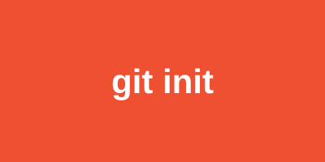

1. Crear un repositorio

Un repositorio es la carpeta de tu proyecto con su historial. Se crea con git init y se descarga uno existente con git clone. Verifica el estado con git status.
Aprende los conceptos básicos del control de versiones en cuatro pasos.

Un repositorio es la carpeta de tu proyecto con su historial. Se crea con git init y se descarga uno existente con git clone. Verifica el estado con git status.
Primero se agregan los archivos al área de preparación con git add . y luego se guarda la versión con git commit -m "mensaje". Cada commit es un punto al que puedes volver.
Las ramas permiten desarrollar funciones sin afectar la versión principal. Crea una con git branch nombre, cámbiate con git switch nombre y únela con git merge nombre.
Servicios como GitHub almacenan tu repositorio en la nube. Conéctalo con git remote add origin URL, y sube los cambios con git push; descarga novedades con git pull.